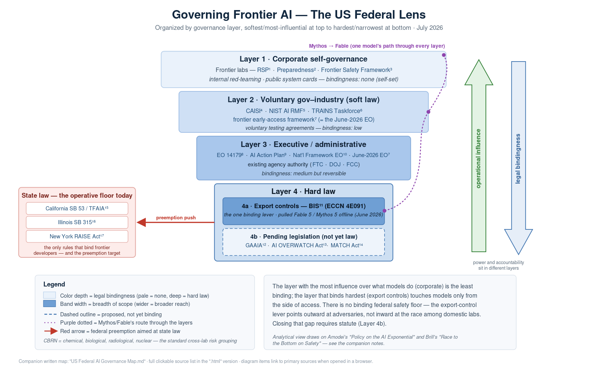

Organized by governance layer · July 2026 · every item below links to its primary source

Companion written map: US Federal AI Governance Map.md. This page embeds the SVG (links clickable in-diagram) and falls back to the PNG if the SVG can't load.